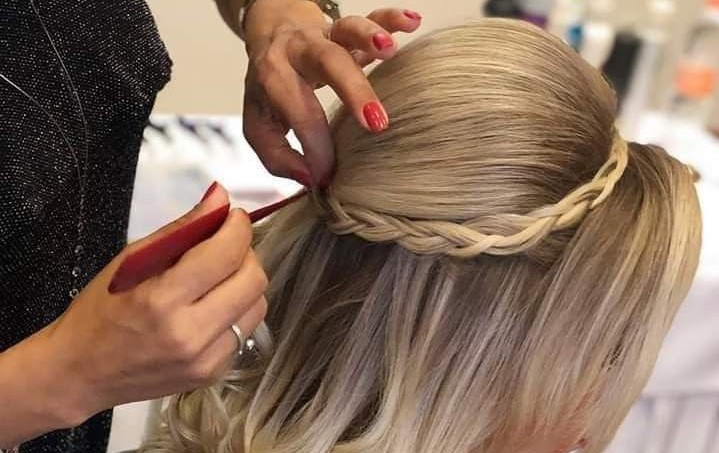
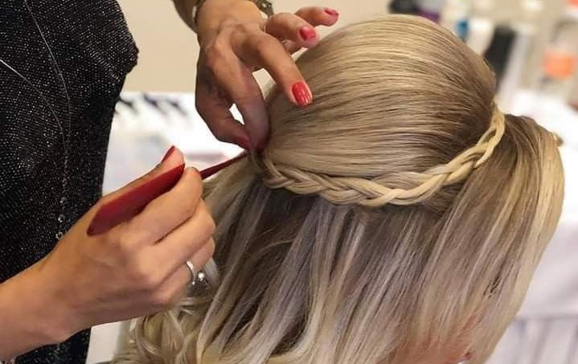

Nós da Nativas nós preocupamos muito com os nossos clientes e com aqueles(a) que admiram a gente.

 

O salão "Nativas" oferece mais uma novidade: cursos para cabeleireiros!
Cursos:

Cabeleireiro - básico ao avançado
Carga horária: 400 horas
Data de início: 27/07/2023
Valor: R$4.000,00
"A área de beleza está sempre em alta, pois muitas pessoas procuram este tipo de serviço para cuidar da aparência. Pensando nisso, investir nessa área pode ser uma ótima opção para quem procura uma oportunidade de crescimento."

Trancista
Carga horária: 32 horas
Data de início: 15/06/2023
Valor: R$800,00
"Hoje em dia, fazer tranças além de transmitir o conhecimento ancestral também é uma forma de renda para muitas pessoas negras, os trancistas como são chamadas quem trabalha especificamente fazendo tranças, é uma profissão que vem crescendo cada dia mais."

Penteados
Carga horária: 40 horas
Data de início: 15/07/2023
Valor: R$550,00
“Como a arte de fazer penteados é bem subjetiva, ou seja, na hora em que a cliente estiver na sua frente é que você vai estudar qual é a melhor técnica a ser usada e o tipo de penteado que ficará bem nela”, afirma Mitsue Ávila Watanabe, professora do curso Como Fazer Penteados.